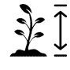
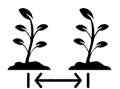

Retour à l'accueil
| J | F | M | A | M | J | J | A | S | O | N | D | |
|---|---|---|---|---|---|---|---|---|---|---|---|---|
 |
||||||||||||
 |
- Type de plante :
- annuelle
- Cycle de vie :
- 1 ans
- Intérêt :
- jardins, prairies fleuries,
- terrasses,
- balcons,
- comestible,
- médicinale,
- mellifère
 jardins, prairies fleuries,
jardins, prairies fleuries,
 terrasses,
terrasses,
 balcons,
balcons,
 comestible,
comestible,
 médicinale,
médicinale,
 mellifère
mellifère
- Utilisation :
- pleine terre,
- pots
 pleine terre,
pleine terre,
 pots
pots
- Couleurs :
 Couleurs :
Couleurs :

- Forme et feuillage :
- feuillage caduc
 Forme et feuillage :
Forme et feuillage :
- Méthode de multiplication
- semis
 Méthode de multiplication
Méthode de multiplication
 semis
semis
- Dimensions :
-  30 à 80 cm.
- 30 à 60 cm.
- croissance normale.
-  4 à 5 pieds/m²
 30 à 60 cm.
30 à 60 cm.
 croissance normale.
croissance normale.
- environnement :
- grande resistance
- plein soleil
- faible besoin
- Type de sols : calcaire, sableux, caillouteux, humus, terreau, sol sec et drainé.
- alcalin, neutre.
- océanique, semi-océanique, continental, méditerranéen.
 environnement :
environnement :
 grande resistance
grande resistance
 faible besoin
faible besoin
 Type de sols : calcaire, sableux, caillouteux, humus, terreau, sol sec et drainé.
Type de sols : calcaire, sableux, caillouteux, humus, terreau, sol sec et drainé.
 océanique, semi-océanique, continental, méditerranéen.
océanique, semi-océanique, continental, méditerranéen.